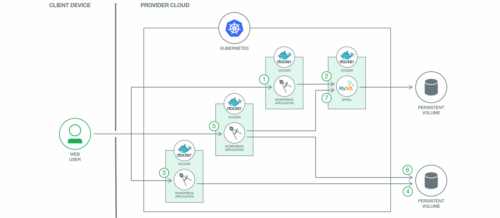

Scaleable dynamic websites
WordPress is the world’s most popular website management and blogging system, supporting more than 60 million websites. At its core, WordPress is built on one of the most common web programming languages, PHP, and uses MariaDB as its back-end database. K3s/K8s is a opensource container management system one of the top 10 GitHub projects based on the number of unique developers contributing code. The challenge for developers is how to bring these two giant open source projects together to provide maximum benefits.
Architecture

The user interacts with WordPress via the web interface. Each WordPress container responds to its users via HTTPS.
When a user posts to any WordPress container, WordPress typically posts the changes to the MariaDB Database. The database stores the post data into persistent disks to maintain security. After authentication and authorization are complete, WordPress user information such as a password (encrypted with MD5) and email address is created and stored in the Database. The website, blogs, tags, categories, and other data are there also stored.
The user can also upload themes, plugins, images, and documents. Non-textual data, such as PDFs, videos, and MP3s, can also be uploaded.
Themes, plugins, PDFs, videos, MP3s, and more are stored in a persistent volume attached to the WordPress pods.
The user accesses the WordPress website or blog. The WordPress core (that is, the WordPress “brain”) calls the required PHP scripts, starting with index.php
WordPress reaches out to the Database to retrieve the website, blogs, tags, categories, and so on.
The WordPress core then retrieves the themes, documents, images, etc. from the persistent volume, combines it with data retrieved from the database, and presents the page to the user.